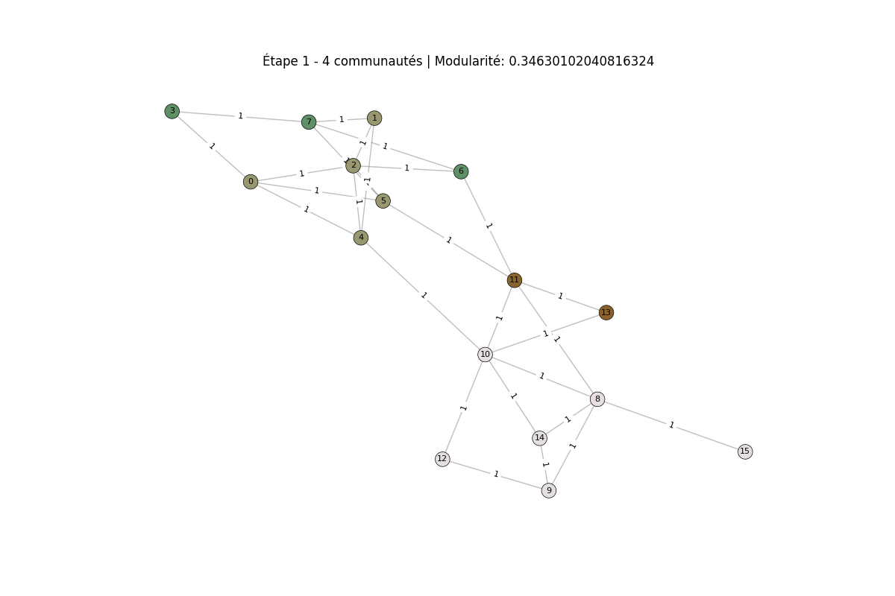
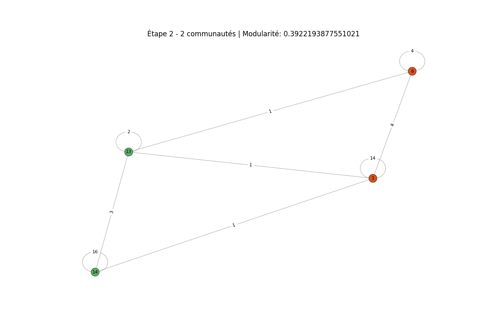
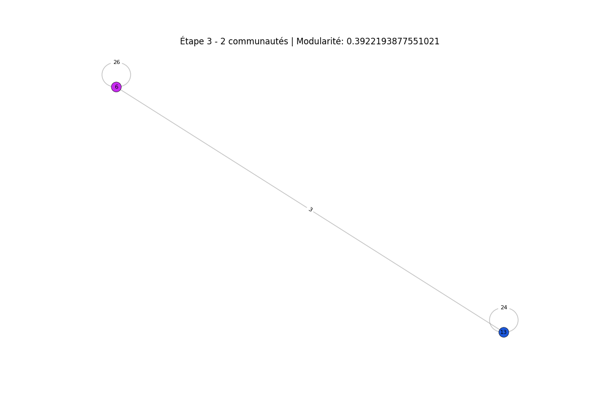

Ce projet de recherche à été réalisé durant le second semestre de L3, et consiste à comprendre et implémenter un article de recherche. J'ai réalisé ce projet avec Agathe Papineau et 2 autres personne.
Projet de recherche L3
Dépôt GitHub(Le dépôt est encore privé car le projet n'est pas encore rendu)
Mars - Avril 2025 - Projet universitaire - python, Git
L'article de recherche est "Fast unfolding of communities in large network", cette article explique comment identifier des communautés dans un graphe. Ce projet étais différant des autres car nous n'avions pas de sujet bien cadrée mais un article de recherche en anglais, qui à fallu lire et comprendre, puis l'implémenter.
Le projet à bien commencé avec quelque séance afin de lire et comprendre l’article en groupe, puis j'ai réalisé un première implémentation qui définissait la structure du données ainsi que les grandes lignes du code.
En suite, j'ai continué avec les autres membre du groupes à continuer l'implémentation et résoudre les problèmes. J'ai passé énormément de temps à régler les problèmes du code avec un autre membre jusqu'à trouver une petite subtilisé dans la formule qui permettais de la faire fonctionner.
Un autre membre du groupe à réalisé une représentation graphique du graphe qui permet de plus facilement visualiser le résultat de l'algorithme. (Ce graphe est le même que le graphe d'illustration dans l'article)
  